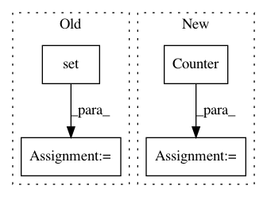

5c8f92c5d865bb8d8a90740506e4a7ef9f62398c,python/src/nnabla/utils/converter/tensorflow/importer.py,,_find_out_terminal_node,#Any#,32
Before Change
unlike_output_types = ["Const", "Assign", "Noop", "Placeholder"]
terminal_inputs = []
inputs = set()
outputs = set()
need_add_postfix = kwargs.get("postfix", False)
for node in graph_def.node:
strip_name = _strip_node_name(node.name)
After Change
unlike_output_types = ["Const", "Assign", "NoOp", "Placeholder"]
terminal_inputs = []
terminal_outputs = []
input_cnt = collections.Counter()
need_add_postfix = kwargs.get("postfix", False)
for node in graph_def.node:
for input in node.input:
input = _strip_node_name(input)
In pattern: SUPERPATTERN
Frequency: 3
Non-data size: 4
Instances
Project Name: sony/nnabla
Commit Name: 5c8f92c5d865bb8d8a90740506e4a7ef9f62398c
Time: 2019-04-24
Author: Yuchi.Wen@sony.com
File Name: python/src/nnabla/utils/converter/tensorflow/importer.py
Class Name:
Method Name: _find_out_terminal_node
Project Name: RaRe-Technologies/gensim
Commit Name: 680de8d4f35325e7486c07c4e06422929e826b57
Time: 2019-01-10
Author: __Singleton__@hackerdom.ru
File Name: gensim/corpora/lowcorpus.py
Class Name: LowCorpus
Method Name: line2doc
Project Name: mittagessen/kraken
Commit Name: d8abd944a8b95b36ead150abbf6b42a9276bf660
Time: 2017-05-02
Author: mittagessen@l.unchti.me
File Name: kraken/train.py
Class Name: GroundTruthContainer
Method Name: __init__